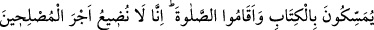

İSRÂİLOĞULLARI’NA
VERİLEN CEZALAR
167. Rabbin, elbette kıyamet gününe kadar onlara en kötü eziyeti yapacak
kimseler göndereceğini ilân etti. Şüphesiz Rabbin cezayı çabuk verendir. Ve o çok
bağışlayan, pek esirgeyendir.
168. Onları (yahudileri) gurup gurup yeryüzüne dağıttık. Onlardan iyi kimseler
vardır, yine onlardan bundan aşağıda olanları da vardır. (Kötülüklerinden) belki
dönerler diye onları iyilik ve kötülüklerle imtihan ettik.
169. Onların ardından da (ayetleri tahrif karşılığında) şu değersiz dünya malını
alıp, nasıl olsa bağışlanacağız, diyerek Kitab’a vâris olan birtakım kötü kimseler
geldi. Onlara, ona benzer bir menfaat daha gelse onu da alırlar. Peki Kitap’ta Allah
hakkında gerçekten başka bir şey söylemeyeceklerine dair onlardan söz alınmamış
mıydı ve onlar Kitap’takini okumamışlar mıydı? Âhiret yurdu sakınanlar için daha
hayırlıdır. Hâla aklınız ermiyor mu?
170. Kitab’a sımsıkı sarılıp namazı dosdoğru kılanlar var ya, işte biz böyle iyiliğe
çalışanların ecrini zayi etmeyiz.
171. Bir zamanlar dağı İsrailoğullarının üzerine gölge gibi kaldırdık da üstlerine
düşecek sandılar. “Size verdiğimizi (Kitab’ı) kuvvetle tutun ve içinde olanı
hatırlayın ki korunasınız” dedik.